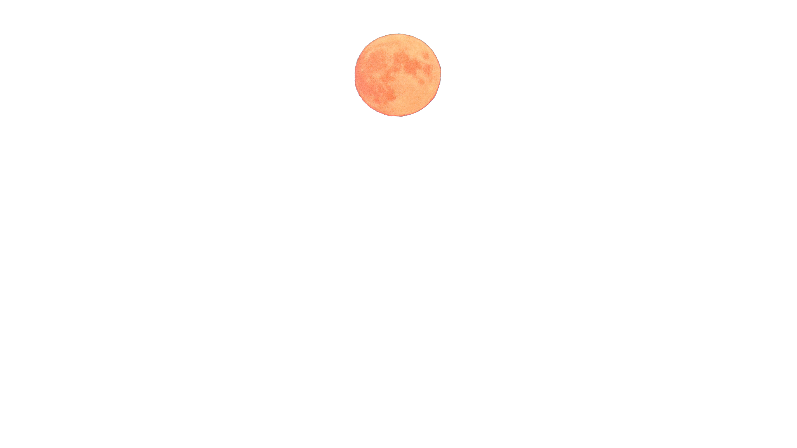
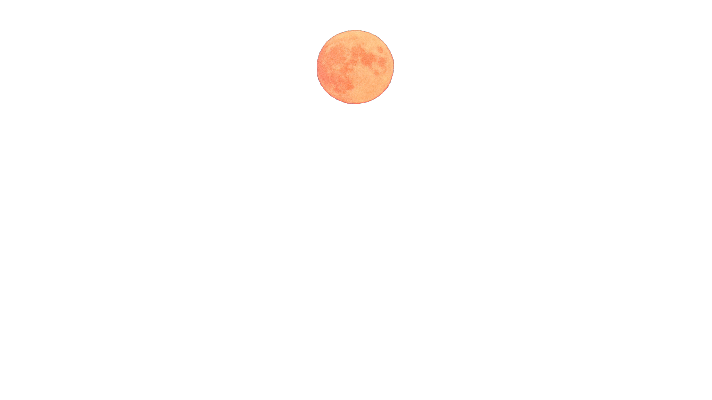

Pleine Lune : 5 rituels à faire aujourd'hui pour profiter de toute l'énergie de la lune
Quelles sont les différentes phases de la lune ?
"La nouvelle lune ou la pleine lune sont connues pour être les phases les plus puissantes, sur le plan énergétique, avec le sentiment soit de se sentir au top, ou au contraire, étrangement down.
Pour rappel, le cycle de la lune dure 28 jours, et durant ce laps de temps, elle passe de la nouvelle lune à la lune croissante, de la pleine lune à la lune décroissante. Lorsque la lune est croissante, elle se remplit, et apporte énergie et abondance. C’est la période idéale pour manifester ses buts et envies.
Lorsqu’elle est décroissante, elle se rétrécit. C’est donc un moment opportun pour lâcher-prise et mettre de l’ordre que ce soit physiquement (ranger, désencombrer) ou émotionnellement (se débarrasser de schémas de pensées négatives, dans sa carrière ou ses relations par exemple). La nouvelle lune et la pleine lune sont des périodes de transformation. Ils sont les points culminants du cycle de la lune et sont, par conséquent, les plus puissants.
En savoir plus +
Quels sont les effets de la Pleine Lune sur notre bien-être ?
Comment nous affecte-t-elle ?
“La pleine lune est une période d’illumination qui peut être très énergique, autant quand elle est remplie à 100% que les quelques jours qui précèdent. La théorie dit qu’elle met en lumière les choses que vous n’avez pas forcément remarquées ou dont vous n’avez pas forcément connaissance.
C’est donc une période idéale pour évaluer différents aspects de votre vie et se concentrer sur ce que vous voulez réellement… Et sur ce qui vous freine à les accomplir. La pleine lune peut affecter les gens de différentes façons, avec une impression de fatigue extrême ou au contraire, d’énergie au sommet.
Il peut sembler impossible de se concentrer ou bien se sentir très inspiré, mais pas spécialement de manière posée et efficace. Peu importe le cas de figure dans lequel vous vous trouvez, testez différents rituels pour vous sentir plus ancré et vous aidez à faire le tri dans votre vie. Vous gagnerez ainsi en clarté, acceptation et inspiration qui mèneront vers du changement et de la transformation positifs.
Et ce, dans tous les aspects de votre vie, simplement en travaillant sur votre subconscient. Les rituels wellness peuvent se pratiquer à tout moment, plusieurs fois sur le mois de préférence, mais la raison pour laquelle ils sont particulièrement recommandés aux alentours de la pleine lune est que les énergies spirituelles et universelles sont plus actives et intenses à cette période.
En savoir plus +
Achat de tableau photographie MoonLigth by Lenny Ruprecht
Bientôt disponible à la commande